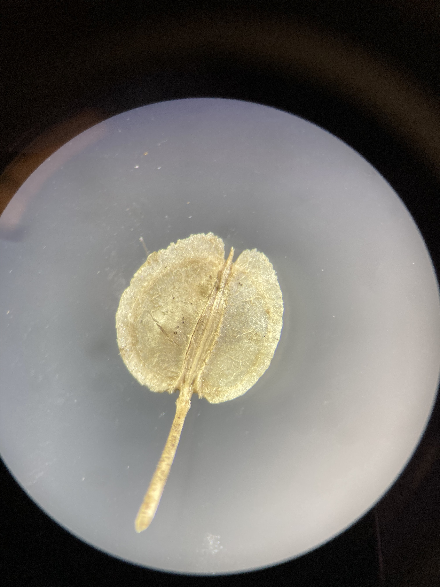
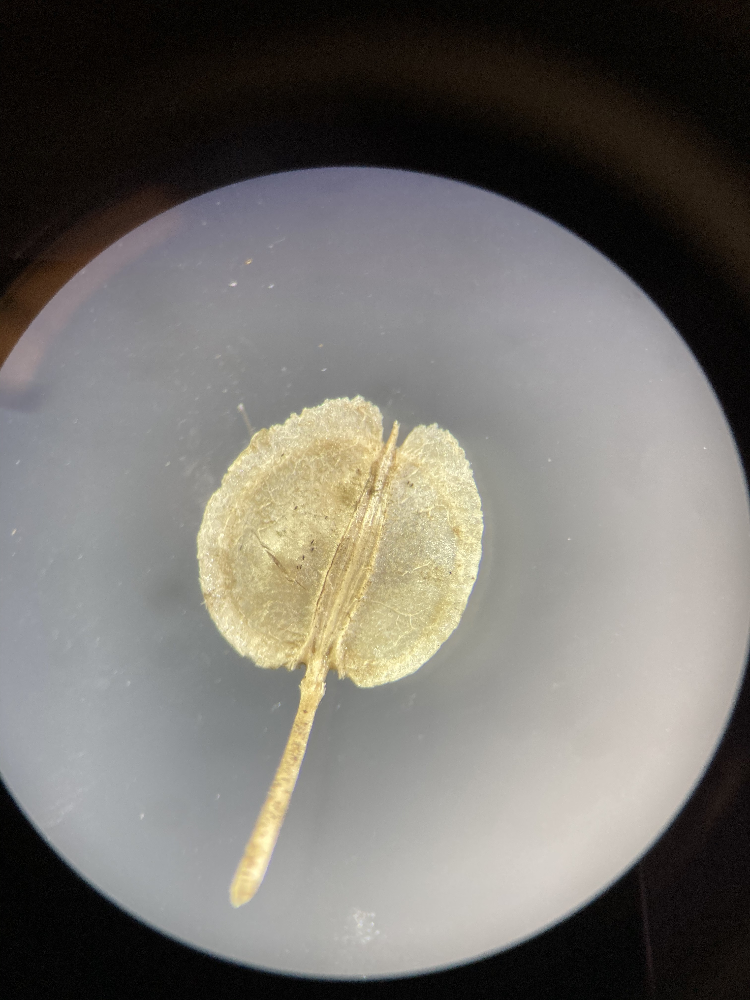
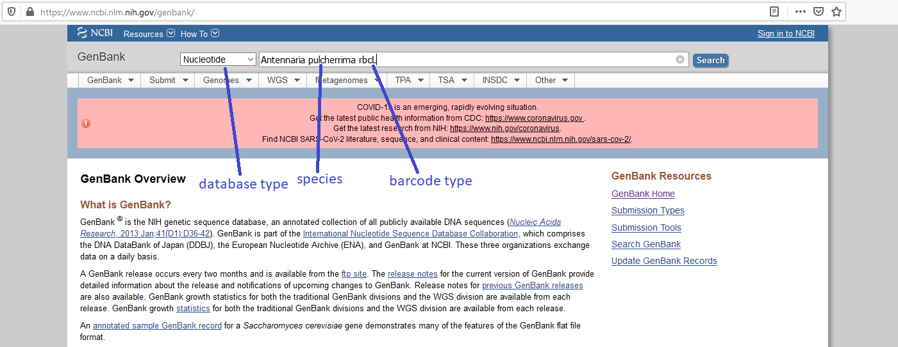
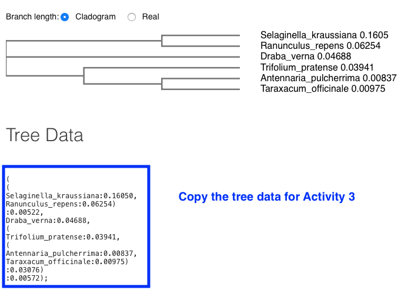

Lab 5: Brassicaceae, Malvaceae, Ericaceae, and intro to phylogenetics
Brassicaceae - Mustard family
1. Herbs.
2. Leaves simple, pinnatifid, or pinnately compound, alternate, without stipulates.
3. Flowers perfect, cruciform (cross or X shaped). Sepals 4, free. Petals 4, free, clawed. Stamens 6 and tetradynamous (the 2 outer stamens shorter than the 4 inner stamens). Pistil compound, ovary superior, carpels 2, placentation parietal.
4. Fruit a silique or silicle.
5. About 350 genera and 3,000 species, primarily North Temperate.
Diagrams

Brassicaceae is the 4th largest family in B.C., with 169 species and varieties. The family is very important economically, providing cabbage, broccoli, cauliflower (all species or varieties of Brassica), mustard, turnips, rapeseed or canola, radish (Raphanus), horseradish (Amoracia rusticana), and watercress (Rorippa). Numerous genera are cultivated as ornamentals, including Lobularia (sweet alyssum), Matthiola (stocks), and Aubrieta.
Flowers
Brassicaceae flowers are very characteristic, making them fairly easy to identify to family. The genera and species are more difficult however, and often require ripe fruit and sometimes a microscope to examine minute trichome (hair) structure. Let’s look at some flowers. Below you can see the typical ‘cruciform’ (cross-like) structure of the petals, and ‘tetradynamous’ stamens.


The petals typically have a narrow “claw” at the base, with the “blade” bending outwards at the throat of the corolla.

Petals tend to be white, yellow, or pink/purple in the Brassicaceae. Keep in mind these colours, along with 4-petals arranged in a cross-shape and tetradynamous stamens, to help yourself identify this family confidently.

Fruit
As mentioned above, much of the Brassicaceae key is concerned with fruits. The family has two unique fruit types, siliques and silicles. Siliques are more the twice as long as they are wide (appearing long and narrow), while silicles are less than two times as long as wide (appearing short and wide in comparison). Can you identify which is which from the photos below?


Siliques and silicles are dehiscent fruit from a 2-carpellate, 2-loculed ovary. The two carpels (or valves) split away from a central structure called a “replum”, which is a thin, often papery/translucent plane that sits in between the two valves like a wall. These fruit are typically flattened in two different ways: if the fruit is flattened parallel to the replum (so that the replum is rather wide) we refer to that as “compressed”, and if the fruit is flattened perpendicular to the replum (so that the replum is quite thin) we call that “obcompressed”. See if you can identify the two valves, replum, and the type of compression in the fruit below.

 
 


Leaves
Brassicaceae leaves can be simple or compound, and are arranged alternatively and without stipules. Many leaves are “pinnatifid”, which are pinnately divided or lobed but not all the way to the midrib of the leaf (do you see how this is different from compound leaves?).

A variation on pinnatifid is lyrate, which is similar except the leaves have a large/rounded terminal lobe with the lobes getting smaller towards the base of the leaf. Here is an example from Arabidopsis lyrata.
Another important characteristic for identification is trichomes, which can be quite complex and varied in the Brassicaceae. A stunning example of intricate trichome morphology is displayed in the genus Draba (Evan’s personal favorite genus!!!), a hyper-diverse group that are typically only found in alpine areas. Draba (amongst many other members of Brassicaceae) have particular trichome patterns that can be useful (and sometimes necessary) to identify individual species. Can you identify different types of trichomes in the two Draba species below? Make sure you zoom in!


KNOWLEDGE CHECK 5.1
Draw a representative Brassicaceae plant (feel free to use your imagination), and make sure to include the following:
- Flowers with typical Brassicaceous features.
- A fully developed fruit. Indicate whether it is a silicle or a silique. Include a section to see the parts inside.
- Pinnatifid or Lyrate leaves
- Trichomes - pick a type from the diagrams and make sure to label properly.
- Make sure to label your drawing with the following terms (if present): sepals, petals, claw and blade, stamens, pistil (label all parts), silicle or silique, valves and replum.
Malvaceae - Mallow family
1. Mostly herbs, some shrubs or small trees, usually with stellate hairs.
2. Leaves simple, petiolate, alternate, palmately veined and often palmately lobed, with stipules.
3. Flowers perfect or rarely unisexual, usually radially symmetrical. Sepals 5, usually fused below, sometimes with calyx-like involucral bracts below the true calyx. Petals 5, separate, short clawed, attached to staminal tube just above receptacle. Stamens numerous, monadelphous, filaments connate into a tube around the ovary and style. Pistil compound, ovary superior, carpels 2-many, placentation axile.
4. Fruit usually a capsule or schizocarp, separating into mericarps.
5. About 100 genera and 2000 species, widespread but mostly tropical, often in dry areas.
Diagrams
Malvaceae is easily recognized by the filaments connate into a tube around the ovary, and the alternate, palmately-veined leaves with stellate or scaly pubescence. It is a small family in B.C. with 10 taxa, half of them introduced weeds. Several genera are grown as ornamentals, including Althea, hollycock, Hibiscus, Sidalcea, and Lavatera. Cotton (Gossypium) is the most important crop in the family; unripe fruits of okra, Abelmoschus esculentus, are used as a vegetable and the fleshy red calyxes of Hibiscus sabdariffa (roselle or Jamaica flower) are used for herbal teas, cold drinks, and jelly.
Flowers
Those familiar with Hibiscus flowers should have a pretty good search image in mind for this family. The flowers tend to be large and conspicuous, 5 showy petals, and numerous stamens and styles fused into a prominent central tube rising out of the center. Here are some examples:


Here you can see a longitudinal section of the flower:

And close-ups of the staminal tube with styles emerging through the center:


Malvaceae flowers tend to have 5 sepals, and many appear to have two sets of sepals. In actuality, the lower ones are a set of calyx-like bracts.

Leaves
Malvaceae species often have leaves with palmate lobes and venation. Many species also have dense pubescence all over the leaves, stems, and calyxes, often comprised of “stellate” trichomes.


Fruit
Malvaceae species either have capsules (in the case of cotton) or “schizocarps” as their fruit type. A schizocarp is a cool looking fruit that somewhat resembles a bundt cake in appearance. It splits into several segments called “mericarps”, each representing a single, indehiscent carpel with one seed inside. Once the schizocarp is mature, the mericarps harden and fall out individually.

KNOWLEDGE CHECK 5.2
Draw a Malvaceae plant (feel free to use your imagination), and make sure to include the following:
- Representative flower complete with calyx-like bracts and stamen tube.
- Palmately lobed leaves with trichomes.
- A fully developed schizocarp.
- Make sure to include the following labels: petals, sepals, bracts, stamens, styles, leaf, trichomes, schizocarp, mericarp.
Ericaceae - Heath family
1. Mostly shrubs or autotrophic or saprophytic herbs which are sometimes separated into two other families, the Monotropaceae and Pyrolaceae.
2. Leaves simple, alternate, often leathery and evergreen, without stipules.
3. Flowers perfect, usually actinomorphic. Sepals usually 4 or 5. Petals usually 4 or 5, usually fused. Stamens usually 4, 5, 8 or 10, free from corolla, anthers usually with poricidal dehiscence. Pistil compound, ovary superior or inferior, carpels usually 4-12, placentation axile.
4. Fruit a capsule, berry, or berrylike drupe.
5. About 75 genera and 2,000 species, primarily in cold temperate regions and at high elevations on tropical mountains, often growing in acid soils or bogs.
Diagrams
Members of the Ericaceae are common shrubs in B.C. Familiar genera include Arbutus, Arctostaphylos (kinnikinnick), Gaultheria (salal, wintergreen), Kalmia (swamp laurel), Ledum (now Rhododendron, Labrador tea), Rhododendron, and Vaccinium (blueberries, cranberries, and huckleberries). Many genera are cultivated as ornamentals.
The Ericaceae traditionally consists of 4 subfamilies which are sometimes but incorrectly considered separate families.
Ericoideae - Photosynthetic shrubs, ovary superior, petals usually fused, sometimes free, anthers usually with pores, sometimes slits, pollen shed in tetrads. (Erica, Rhododendron, Gaultheria).
Vaccinioideae - Photosynthetic shrubs, ovary inferior, petals fused, anthers with pores, pollen shed in tetrads (Vaccinium).
Pyroloideae - Photosynthetic or saprophytic herbs, ovary superior, petals free or slightly fused, anthers with pores, pollen shed in tetrads (Pyrola).
Monotropoideae - Saprophytic herbs, ovary superior, petals fused or free, anthers with slits, pollen grains shed individually (Monotropa, Allotropa).
Recent cladistic analyses of DNA sequences have resulted in Empetraceae and Epacridaceae being added to Ericaceae. Empetrum (crowberry) occurs in B.C. and is basically a wind pollinated Ericaceae with reduced flowers. Epacridaceae were primarily Australian, and no one could tell them from Ericaceae anyway.
Flowers
Ericaceae flowers are characterized as “urceolate” or urn-shaped. The corollas are sympetalous (peak at the top to count the number of corolla lobes), and flowers can have superior or inferior ovaries.


Ericaceae species have very cool stamens that are adapted to buzz pollination. The stamens have expanded filaments with conspicuous awns that release pollen via “poricidal” dehiscence. When bumblebees visit the flower and climb inside the corolla, the buzzing from their wings vibrates the awns (which act like little tuning forks), causing pollen to be released from the pores on top. Pretty cool! Can you identify the filaments, pores, and awns in the pictures below?


Fruit
Ericaceae often have berries or berry-like capsules as their fruit type.


Most are familiar with blueberries (Vaccinium sp.), which produce berries from an inferior ovary. What indicates that blueberries develop from inferior ovaries?

If you look closely at a salal “berry”, you’ll see that it actually has a capsule enclosed within a fleshy, juicy calyx. Would this be considered a superior or inferior ovary?

Leaves
Members of the Ericaceae tend to have simple, evergreen, leathery leaves without stipules. These features may help you differentiate this family from Rosaceae, which may appear similar at times (e.g., comparing a Rosaceous plant with pomes vs an Ericaceous plant with berries…).


KNOWLEDGE CHECK 5.3
Draw a typical member of the Ericaceae (feel free to use your imagination), and include the following:
- An Ericaceous flower with urceolate corolla and characteristic stamens.
- Simple, evergreen leaves.
- Include a drawing of a mature fruit. Make sure to label the type, and whether it originated from a superior or inferior ovary.
- Make sure to include the following labels: calyx, corolla, stamens (label all parts), pistil (label position and all parts), fruit (label the type), leaves.
Introduction to phylogenetics
Motivation
Phylogenetics is one of the most important and controversial fields within plant taxonomy. The ability to sequence and compare plant DNA has split, grouped, and uncovered taxa in ways never expected. In modern plant taxonomy, phylogenetic relationships are a key piece of evidence to consider when delimiting species. In this lab, we’ll be downloading and aligning DNA sequences from the species you found in your iNaturalist project! Using these sequences, we’ll construct a phylogenetic tree and consider whether the species relationships support what you have learned about the taxonomic organization (e.g. grouping by family) of these taxa.
Specifically, you will be downloading sequences from the rbcL gene region, a region of the genome that is commonly used for plant DNA barcoding. DNA barcodes are universally recoverable chunks of DNA that are used for the identification of taxa at the species level. These regions of the genome vary between species, but are conserved enough (not evolving rapidly) within species that they can be confidently used for species identification. DNA barcoding has become an extremely useful tool for researchers, allowing species identification from all types of tissue (i.e., stems, leaves, fruit, seeds, even old/damaged herbarium specimens!), the identification of cryptic (very morphologically similar) species, and even the discovery of new species! In addition, genetic variation of barcoded regions can be compared between species to give a cursory overview of their phylogenetic relationships - this is what you’ll be using rbcL for today!
If you are interested in learning more about DNA barcoding, read this paper by John Kress (2017) to get a recent overview of the past and future applications of plant DNA barcodes.
Outcomes
By the end of this tutorial you will have:
Experience using Genbank, MUSCLE, and NCBI tree viewer.
Familiarity with Genbank and the types of data that can be obtained,
The tools and knowledge needed to create your own phylogenetic tree to be included in the written component of Project 1 (iNaturalist).
Activity 1: Search Genbank for sequence data
After you have identified your 10 iNaturalist species, navigate to the GenBank website. From the drop-down menu next to the search bar, make sure that the database selected is Nucleotide. Type in the scientific name of your first plant, followed by the name of the barcode. For demonstration purposes we’ll use five species (two of which are from the same family, the other three from different families), and the rbcL barcode. Here’s what our first search looks like:

The search will return list of sequence submissions from various authors and projects that have barcoded that species. When possible, use sequences that were generated from the same project — you can check by clicking on an entry and looking at the AUTHORS and TITLE entries. If you can’t find sequences from the same project, try to find entries that are of similar length (e.g., 500-600 bp).
After entering your search query, click on the ‘FASTA’ option under any entry to see the DNA sequence:

To save the sequence, we’ll copy the sequence string, as well as the header information (everything in the box above). Paste the FASTA entry into a text editor. Repeat this procedure for the remaining taxa, pasting the FASTA entries into your text document, with each entry separated by a blank line. Then, simplify the headers by writing the scientific name with the genus, species, and family separated by underscores "_“. Make sure to keep the”>" symbol at the beginning.

Once you’ve done this for your 10 iNaturalist species, you will add one more rbcL sequence from Selaginella kraussiana (Selaginellaceae). This is a species of clubmoss (some of you may recognize it from BIOL 210), which is an early-diverging seedless vascular plant that will serve as your outgroup. In phylogenetics, outgroups are taxa that are more distantly related to your focal taxa (or “ingroup”), and will help provide a point of comparison for the relationships between your iNaturalist species.
Activity 2: Multiple Sequence Alignment
In order to compare the similarities of our sequences, we need to first align them. This ensures that any differences between samples are not caused simply by different reading frames. While we could align our sequences by eye, we’ll use the MUSCLE algorithm which is much faster and reproducible. Navigate to the MUSCLE webpage, and paste all of your sequences into the first box:

After pasting your sequences, scroll down and click “Submit”. The results page will show you the optimal alignment of your rbcL sequences. To see the associated phylogram, click on “Phylogenetic Tree” tab. Copy the text under “Tree Data” to use for Activity 3.

Activity 3: Making a custom phylogenetic tree
Now that you’ve aligned your sequences and generated a phylogenetic tree, we can visualize it in the NCBI Tree Viewer. Click on the “Upload your data” button, select “Text” from the left-side panel, and paste in your tree data from the previous activity. Click upload and it will generate your tree!
You’ve now made your very own phylogenetic tree! You can click the “Tool” drop-down menu at the top right to play with the options a little bit, for example you can change the layout from the “Radial” default to another of your choosing. You now have the possibility to export your tree to a variety of formats that can be used in more advanced phylogenetics programs, or export it as a .pdf. Unfortunately, the .pdf export option does not work very well (text is huge and cut off, and the scale bar does not appear accurate either). The simplest option is to take a screenshot of your tree in the browser, and make sure to include the scalebar as well.
KNOWLEDGE CHECK 5.4
Follow the above instructions to create a phylogenetic tree of your iNaturalist observations. This will be included in your Project 1 written component.
Here are some tips:
- Make sure to include all 10 of your iNaturalist observations as well as Selaginella kraussiana as an outgroup.
- Ensure that the species in your tree match up with the identifications on your iNaturalist observations. Don’t worry, if your identification is wrong for your iNaturalist component, you won’t be docked twice for it also being wrong in your tree ;-)
- Most plant species should have an rbcL sequence on GenBank, but if there isn’t one for one of your plants you can try to find another species from the same genus. If there are no sequences from any other member of the genus, then you can leave it out of your tree. In either case (you included a different species from the same genus or could not include one in your tree), you must make a note of it in your report and discuss why it might be missing from GenBank.
- Make sure to include the scalebar. This is an important component of any phylogenetic tree (or map for that matter) and needs to be included.
- Make sure that none of your species/family names are cut off (you can see “Selaginellaceae” is cut off in the above example). If they are cut off, try re-making your tree without the family name and insert it manually using another program (Preview, Paint, or Powerpoint are good options for this).
For next week
You will be getting an introduction to R next week (yay!), so it would be a good idea to get R and R studio installed on your computers so that you are ready to go. We also highly recommend you follow along with Chapter 1 in ModernDive, which is a great free online textbook for using R. Here are some links:
- Read Chapter 1 of ModernDive (https://moderndive.com/1-getting-started.html)
- Install R (https://cran.r-project.org/mirrors.html)
- Install RStudio (https://rstudio.com/products/rstudio/download/)